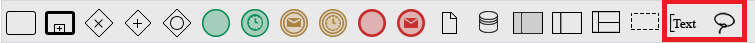
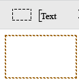
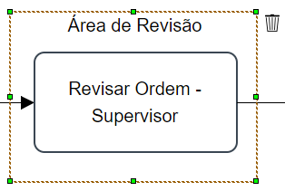

Os elementos são ferramentas de design que permitem que os modelos de processos sejam claramente rotulados e organizados para que possam ser facilmente entendidos a primeira vista. Os elementos são encontrados na linha da caixa de ferramentas do menu Modelagem.

Esses elementos são: grupo e anotações e cada um deles será descrito a seguir.
Grupo
Esse elemento simplesmente agrupa elementos do Mapa do Processo e fornece um mecanismo visual que destaca determinadas áreas do modelo. Para adicionar este elemento, arraste e solte-o no Mapa do Processo.

Depois que esse elemento for adicionado, é possível para o designer adicionar um rótulo à área agrupada:

Para começar a agrupar os elementos do Mapa do Processo, clique em uma das bordas do elemento Grupo, pequenos quadrados verdes aparecem nas bordas:
Aumente ou reduza a área do grupo usando estes quadrados:
Anotações
Esta ferramenta fornece informações de suporte sobre o processo ou elementos dentro do processo. No entanto, não afeta diretamente o fluxo do processo. Para adicionar uma nova anotação, basta arrastar e soltar o item no Mapa do Processo.
Por padrão, o texto dentro do elemento será "Anotação #...", clique duas vezes nele para editar o rótulo.
Além disso, o objeto de anotação de texto pode ser conectado a um objeto específico no diagrama com uma associação. Passe o mouse sobre a anotação até que um ponto amarelo apareça no lado esquerdo. Clique no ponto amarelo e arraste-o em direção a outro objeto no diagrama enquanto mantém pressionado o botão do mouse.
Para conectar a anotação, arraste para um ponto de conexão em outro objeto no diagrama e solte o botão do mouse quando o ponto amarelo de conexão aparecer dentro de um círculo azul maior.
Em seguida, a anotação será conectada ao objeto com uma linha pontilhada. Observe que as anotações de texto não podem ser conectadas às linhas de fluxo entre os objetos.
Para mover esta linha pontilhada, clique nela para que os quadrados verdes apareçam. Em seguida, arraste e solte os quadrados verdes em um novo local.
Para excluir a linha pontilhada, clique nela para que apareçam quadrados verdes. Em seguida, pressione a tecla DELETE no teclado. Da mesma forma, a Anotação pode ser excluída clicando nela para que os quadrados verdes apareçam em todos os lados e, em seguida, pressione a tecla DELETE.
Leve em consideração que, ao adicionar uma anotação grande, o campo não se ajusta automaticamente fazendo com que o texto possa ficar parecido com a imagem abaixo.
Mas existe a opção de ajustar a "Anotação de Texto" para que não fique parecido com a imagem acima. Clique na anotação e os pontos verdes aparecerão para alargar a anotação. Expanda o quanto for necessário, dependendo do texto da anotação. Em seguida, mova a "Anotação de texto" para onde parecer melhor para o processo.